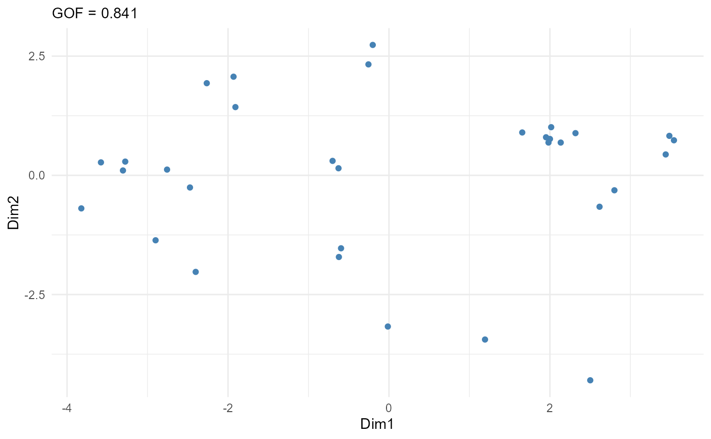

Computes a multidimensional scaling configuration from the distances of the
selected numeric columns: classical (metric) MDS via stats::cmdscale or
non-metric MDS via MASS::isoMDS.
Usage
mv_mds(
data,
cols,
k = 2,
metric = TRUE,
dist_method = "euclidean",
scale = TRUE,
maxit = 50
)Arguments
- data
A data frame.
- cols
<
tidy-select> Numeric columns to scale.- k
Number of dimensions.
- metric
Logical. If
TRUE(default), classical metric MDS (cmdscale); ifFALSE, non-metric MDS (MASS::isoMDS).- dist_method
Distance method passed to
stats::dist.- scale
Logical. If
TRUE(default), columns are standardized first.- maxit
Maximum iterations for
MASS::isoMDS.
Value
An object of class mv_mds: a list with components points
(tibble with .row and Dim1...), eigen (tibble with dimension and
eigenvalue, metric MDS only), stress (single-row tibble, non-metric
MDS only), gof (single-row tibble with gof1, gof2, metric MDS
only), and meta.
Examples
r = mv_mds(mtcars, cyl:carb, k = 2)
r$gof
#> # A tibble: 1 × 2
#> gof1 gof2
#> <dbl> <dbl>
#> 1 0.841 0.841
plot_mv_mds(r)
